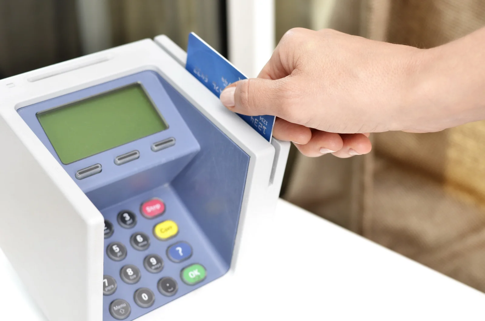

▲ 하이패스 차로를 통과했다고 해서 요금이 항상 정상 결제되는 것은 아니다 ⓒ P.Cps1120a, Wikimedia Commons (CC BY-SA 3.0)
하이패스 차로를 그냥 통과했는데 나중에 문자로 미납 안내를 받아본 경험, 한 번쯤 있을 겁니다. 등록된 카드의 한도가 초과되거나 정보가 만료됐을 때, 혹은 단말기와 통신이 원활하지 않을 때 이런 미납이 발생합니다. 방치하면 가산금이 최대 10배까지 붙을 수 있는 만큼, 정기적으로 셀프 조회하는 습관을 들이는 것이 좋습니다.
1. 하이패스 미납요금, 왜 생길까
하이패스 미납은 대부분 결제 시점의 사소한 오류에서 비롯됩니다. 등록된 카드의 한도가 초과됐거나 카드가 만료·정지된 경우, 선불 하이패스카드의 잔액이 부족한 경우, 또는 단말기와 차로 감지 장치 간 통신이 불안정했던 경우 결제가 정상 처리되지 않고 미납으로 남습니다. 본인은 정상 결제됐다고 생각하고 지나치기 쉬워서, 한동안 잊고 있다가 뒤늦게 문자나 우편 고지서를 받고 나서야 알게 되는 경우가 많습니다.
2. 셀프 조회 방법 3가지
| 방법 | 접속 경로 |
|---|---|
| 하이패스 홈페이지 | hipass.co.kr 접속 → 비회원 미납통행료 조회 → 차량번호 입력 |
| 고속도로 통행료 앱 | 앱 설치 후 차량 등록 → 미납요금 조회 → 미납요금 납부 |
| 콜센터 전화 문의 | 1588-2504 또는 1644-3362로 전화해 요금조회 선택 |
당일 통행분은 정산이 완료되지 않아 조회되지 않을 수 있으므로, 최소 하루 이상 지난 뒤 확인하는 것이 정확합니다. 회원으로 가입해두면 차량을 미리 등록해 두고 미납 발생 시 알림을 받을 수 있어 훨씬 편리합니다.
3. 자동납부 설정법

▲ 후불 하이패스카드를 등록해두면 미납요금이 자동으로 정산된다 ⓒ Hloom Templates, Wikimedia Commons (CC BY 2.0)
매번 직접 조회하기 번거롭다면 자동납부 서비스를 신청해두는 것이 좋습니다. 하이패스 홈페이지에 회원으로 가입한 뒤 후불 하이패스카드를 결제 수단으로 등록하면, 차로에서 발생한 미납요금이 자동으로 결제되고 처리 결과가 이메일로 통보됩니다. 신청 시 차량 명의자 본인인증이 필요하며, 신청 이후 발생하는 미납분부터 자동 처리되므로 신청 전 이미 쌓여 있던 미납금은 별도로 조회해 납부해야 합니다.
4. 방치하면 생기는 일 — 가산금과 강제징수
미납요금을 방치하면 1차 안내문, 2차 고지서, 3차 독촉장 순으로 통지가 이어지고, 그래도 납부하지 않으면 국토교통부 승인에 따라 강제징수 절차가 진행될 수 있습니다. 유료도로법 제20조 1항과 시행령 제14조에 따라 통행료를 고의로 면탈한 경우 최대 10배 범위에서 가산금(부가통행료)이 부과될 수 있고, 특히 1년에 20회 이상 미납이 반복되면 10배 이상의 통행료가 부과되는 것으로 알려져 있습니다. 독촉장 이후에도 계속 미납 상태가 이어지면 차량 압류, 예금 압류, 형사고발 등 행정제재로 이어질 수 있으므로, 미납 안내를 받았다면 최대한 빨리 정산하는 것이 좋습니다.